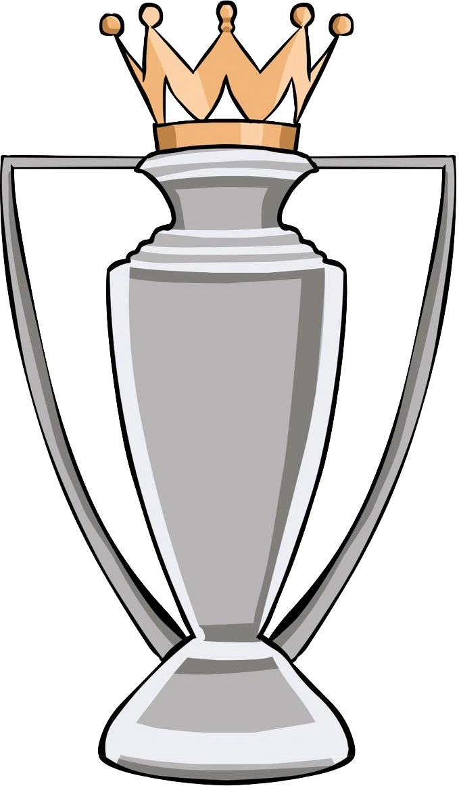
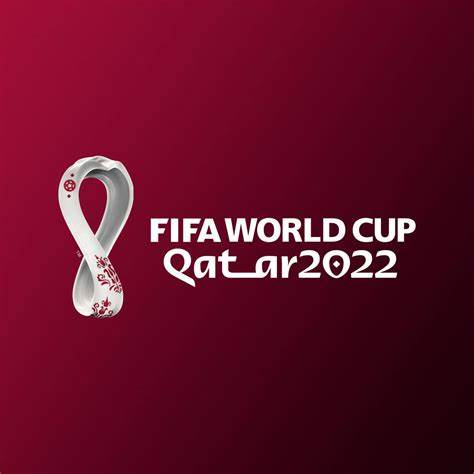

Latest news and updates
End season review 2023/24 
At the end of one of the most enthralling title races in recent seasons, the Premier League Trophy again returned to its customary home in the blue side of Manchester. One of the most dominant teams in English top flight football history, Pep Guardiola’s Manchester City side claimed their sixth domestic crown of the past seven seasons, in addition to multiple cup successes. But this was no troublesome-free victory march. Arsenal pushed City to the final day of the season, while Liverpool threatened until the last few weeks in a compelling three-way battle. Elsewhere, the reign of Ange Postecoglou’s Tottenham Hotspur began with a bang, Unai Emery continued to work his magic in guiding Aston Villa to fourth, Chelsea and Manchester United underwhelmed once more while both still managing to qualify for European competitions next season.
Records
There were 1,246 Premier League goals this season, more than ever before. Manchester City became the first team to win the Premier League title for a fourth consecutive season. The champions were unbeaten at home across the season, equalling the record, although this has happened 18 times before in a Premier League campaign.
World Cup 2022 
The 2022 FIFA World Cup final was an unforgettable match held on December 18, 2022, at the Lusail Stadium in Lusail, Qatar. It featured Argentina and the defending champions, France who previously won in Russia 2019, in what many consider one of the greatest finals in World Cup history
| Tournament details |
| Host Country |
Qatar |
| Dates |
Nov 20 - Dec 18 |
| Teams |
32 (from 5 confederations) |
| Venue |
8 (in 5 host cities) |
Euro 2024 
Italy were the defending champions, having won the 2020 final against England on penalties, but failed to defend the title after being eliminated by Switzerland in the round of 16. Host nation Germany were eliminated by Spain in the quarter-finals; Spain went on to win the tournament for a record fourth time after defeating England 2-1 in the final.
| Tournament details |
| Host Country |
Germany |
| Dates |
14 June - 14 July |
| Teams |
24 |
| Venue |
10 |
African Cup of Nations 2024
Ivory Coast, winning their third AFCON title by defeating Nigeria 2-1 in the final.
| Tournament details |
| Host Country |
Ivory Coast |
| Dates |
Jan 13 - Feb 11 |
| Teams |
24 |
| Venue |
6 (in 5 host cities) |
Copa America 2024
Argentina was the defending champion, won a record sixteenth title after defeating Colombia 1–0 after extra time in the final.
| Tournament details |
| Host Country |
USA |
| Dates |
June 20 - July 14 |
| Teams |
16 (from 2 confederations) |
| Venue |
14 (in 14 host cities) |